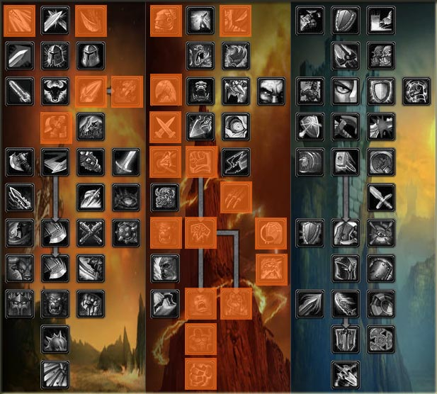
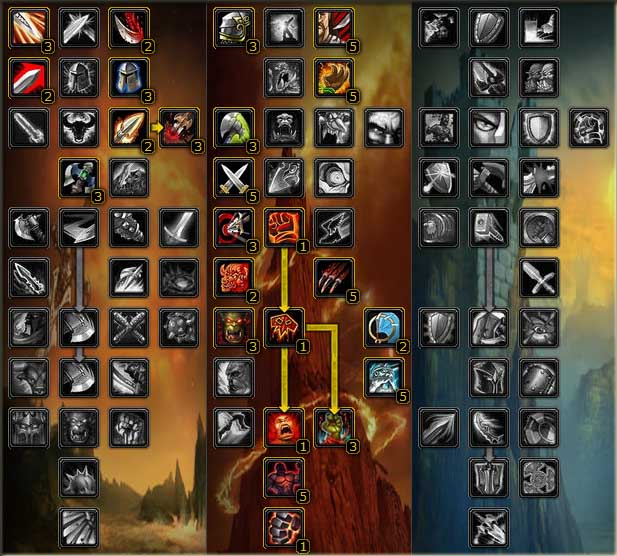
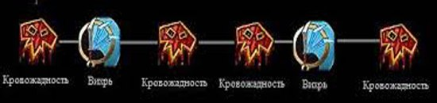
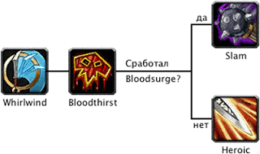

Гайд по Воину «Неистовство» (Fury) в PVE WOW Lich King 3.3.5
Фури вар — это воин в ветке «Неистовства», обладает способностью держать два двуручных оружия одновременно. Фури вар считается могучим персонажем, который может почти каждого положить на арене, а также и выдать очень неплохой Дпс в рейдах.
Вот здесь у меня и возникла небольшая проблема с калькулятором талантов для воина – сейчас большинство калькуляторов уже переделаны под катаклизм. У воина неистовства с билдом все очень просто. Здесь имеется определенный набор талантов и есть несколько талов на выбор – зависимости от того, что предпочитает игрок. В первой картинке я покажу основную раскладку талантов, которые необходимо вкачать, чтобы увеличить ваш дпс.

Билд 2.
Следующий билд является основным для фури варов и среди многих опытных игроков этот билд наиболее распространен и популярен.

2. Характеристики
1.Рейтинг меткости (хит) – это первое что нужно собрать, в сумме меткости должно быть для двуручек 8%. Есть возможность прокачать в талантах «Точность» что придаст вам 5 % меткости
2. Мастерство — Чем больше мастерства тем меньше бос уклонится от ваших атак. И для того чтоб бос не смог уклонится, нужно набрать 26 %.
3. Пробивания брони (арп) — рейтинг пробивания брони должен составлять 100% то есть 1400.
4. Рейтинг критического удара (крит) должен быть не мение 30%
5. Сила — чем больше тем луче.
3. Способности
Кровожадность — абилка, которая является основной у Фури Вара в ПвЕ. Она должна всегда поддерживаться в бою и висеть на цели. Обновляется за одну секунду до окончания.
Во всеоружии — способен перевести показатели вашей брони в силу вашей атаки. Отличная вещь. Используется в моменты, когда босс особо не лупит, чтобы самому не слиться от сильного удара.
Бой двумя оружиями — урон наносимый левой рукой будет значительно увеличен.
Точность — здесь ясно. Каждый удар топора будет достигать противника. Босс будет лизать языком острие лезвия вашего топора при каждом ударе Вара.
Жажда смерти — лучшее что есть у Фури Вара для ПвЕ. Всегда используется в момент, когда прокнули либо триньки, либо вы получили бонус выпив зелья.
Шквал — поднимает хаст, бы быстрее будете наносить удары, в результате это скажется на ДПС.
Прилив крови — дает клевый прок при котором можно повторно пробить Мощный удар. Следите за проками, пользуйтесь необходимыми аддонами
Хватка титана — это вообще кульминация. Фури Вар способен одеть на себя два двуручных топора. Просто настоящий воин. Уникальная фишка для фури Вара. Умение ходить с несколькими топорами делает нашего Фурика не только грозным с виду, но и настоящим ДПС-дамагером
4. Ротация

С боем все просто

5. Символы
Большие:
Символ вихря — уменьшает кд способности на 2 секунды.
Символ удара героя — восстанавливает 10 единиц ярости при нанесении крита «Ударом».
Символ рассечения — плюс один противник в зону поражения способности.
Малые:
Символ кровавой ярости — с этим символом способность «Кровавя ярость» не забирает у вам ХП.
Символ боевого крика — увеличивает время действия способности на 2 минуты.
Символ властности — увеличивает время действия способности на 2 минуты.
6. Чары
Голова — Магический знак страданий
Плечи — Великое начертание секиры
Грудь — Чары для нагрудника — все характеристики VII
Запястья — Свиток чар для наручей – штурм II
Перчи — Чары для перчаток – крушитель
Пояс — Извечная поясная пряжка
Штаны — Накладки для поножей из ледяной чешуи
Боты — Свиток чар для обуви — живучесть клыкарра или Чары для обуви – штурм II
Оружие — Формула чар для оружия — берсерк на оба оружия.(обычно активируются оба что дает двойной баф)
7. Камни
Мета — Алмаз жестокого землеправителя +21 к ловкости и +3% к криту;
Синие камни — Слеза кошмаров +10 ко всем характеристикам;
Красные камни — Рельефный багровый рубин +20 к силе и Растрескавшийся багровый рубин +20 к рейтингу пробивания брони;
Желтые — Растрескавшийся багровый рубин +20 к рейтингу пробивания брони или Рельефный багровый рубин +20 к силе.
8. Bis лист
Голова — Освященный полный шлем имирьярского повелителя
Оружие — Глоренцельг, священный клинок Серебряной Длани, Темная Скорбь
Арбалет — Фал'инраш, Защитник Кель'Таласа
9. Бонусы от профессий
Кожевничество: Меховая подкладка – на силу атаки
Кузнечное дело: позволит сделать дырки для сокетов в наручи и кисть.
Портняжное дело даст вам Вышивку в виде рукояти меча
Ювелирное дело позволит вставить три персональных сокета.
Начертание: Мастерское начертание бури
Наложение чар вам даст возможность зачаровать кольца
10. Еда и Химия
Химия:
Настой бесконечной ярости
Зелье быстроты (привыкайте пить его за мгновение до пула,второе пьем во время своего бурста)
Еда:
Сочное мясо люторога (если не хватает АРП)
Филе дракоперой рыбы-ангела (в случае если АРП собран)
11. Макросы
Для боя с боссом хороший макрос
/cast Кровожадность
/cast !Удар героя
/cast Вихрь
/cast !Удар героя
При треше или когда много АоЕ:
/cast Кровожадность
/cast !Рассекающий удар
/cast Вихрь
/cast !Рассекающий удар
Благодаря макросам любой из персонажей становится не только более мобильным по применению своих способностей но и становится гораздо мощнее по своему ДПС.